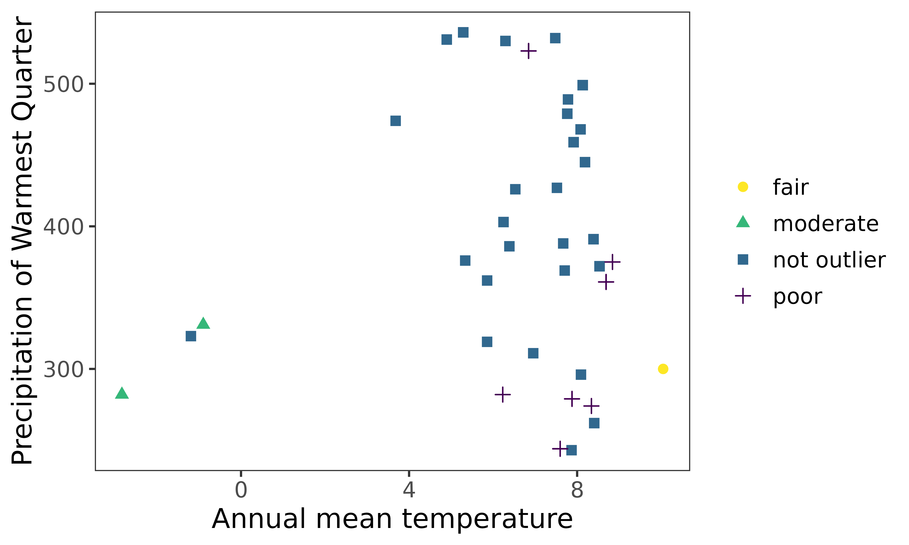
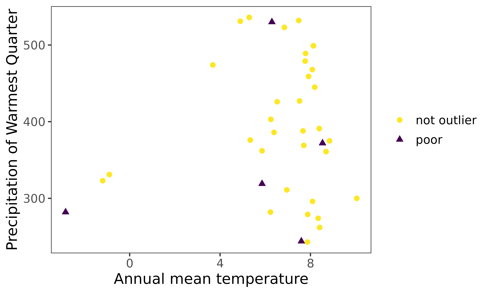

Environmental outlier detection with bootstrapping and principal component analysis.
Source:vignettes/eOutlier.Rmd
eOutlier.RmdEnvironmental outlier check for fish species from the Danube River Basin
The workflow for environmental outlier detection and removal is
similar across taxa, regions, or ecological realms. However, we included
the check_names() function to cater for
fish species names exhaustively. In this worked example, we tried the
functionalities on the fish species from the Danube River Basin, with
extracts of species records from Joint Danube Survey (JDS) and EFI+ data
archived in the package. We complimented the data with fish species
occurrences from online sources including Global Biodiversity
Information Facility (GBIF), iNaturalist, and VertNET using the
getdata() function. They are basically
five steps, including: 1) Data acquisition and harmonization; 2)
Precleaning and predictor extraction 3) outlier detection 4)
identification of clean data and suitable method 5) developing species
distribution models (optional).
Scope of application
In this workflow, we provide three approaches that can be used to handle outlier detection, namely 1) the default approach (no bootstrapping and principal component analysis applied); 2) bootstrapping applied during outlier detection mostly for fewer records (user based to set the records) and 3) combining principal component analysis and bootstrapping. Because each approach will significantly affect how records are flagged as outliers, its upon the user to select an approach to use. However, we advise users to apply bootstrapping and PCA if the particular suspicious records are still not handled in the first approach.
1.Data acquisition: a) Collate species species records: offline and online data
The species records were obtained from the archived datasets
extracted from the Joint Danube Survey (https://www.danubesurvey.org/jds4/) and EFIPLUS (Logez
et al., 2012). To compliment species records, we used the
getdata() function to retrieve data from
the GBIF (https://www.gbif.org/), VertNet (http://www.vertnet.org/)
and iNaturalist ( https://www.inaturalist.org/) for Squalius
cephalus, Salmo trutta, Thymallus thymallus, and
Anguilla anguilla. For online data, we limited data to 50
records from each data source to reduce on the execution time.
NOTE
This workflow may fail if the particular settings such as blocking of IP address to GIBF, iNaturalist, FishBase, and VertNet may prevent user from accessing the online data. Since, this may differ at user-to-user basis, it is beyond the scope of this package to address such limitations.
#==========================
#Step 1ai. Obtain Local data sources (archived in this package)
#=========================
data(efidata) #Data extract from EFIPLUS data
data(jdsdata) #Data extract from JDS4 data
#===================================
#Step 1aii: Retrieve online data for the species: polygon to limit the extent to get records.
#=====================================
danube <- sf::st_read(system.file('extdata', "danube.shp.zip",
package = 'specleanr'), quiet=TRUE)
df_online <- getdata(data = c("Squalius cephalus", 'Salmo trutta',
"Thymallus thymallus","Anguilla anguilla"),
extent = danube,
gbiflim = 50,
inatlim = 50,
vertlim = 50,
verbose = F)
dim(df_online)
#> [1] 567 8Merging and harmonizing species records from different sources
The online data sources from getdata()
and local files are merged using the
match_datasets() function. Five columns
are harmonized while combining data from different sources: the country,
species names, latitude/longitude columns, and dates. The Darwin Core
standard names are country, species, decimalLatitude, decimalLongitude,
and dates (Wieczorek et al., 2012). So, if the local dataset has a
different name for standard names, the user should indicate it. For
example, in JDS data, the species column is labeled
speciesname, shown in the species parameter for
automatic renaming and merging with other datasets. * Note: The user
should indicate all dataset names in the list. *
check_names() is used to clean species names in terms of
synonyms or spellings, based on FishBase (https://www.fishbase.se/). This function generates
another column speciescheck that contain the clean
names.
mergealldfs <- match_datasets(datasets = list(efi= efidata, jds = jdsdata,
onlinedata = df_online),
country = c('JDS4_sampling_ID'),
lats = 'lat', lons = 'lon',
species = c('speciesname', 'scientificName'))
#Species names are re-cleaned since the species names from vertnet are changed.
cleannames_df <- check_names(data = mergealldfs, colsp = 'species', pct = 90,
merge = TRUE, verbose = TRUE)
#> The synoynm Salmo trutta fario will be replaced with Salmo trutta.
#> The synoynm Salmo trutta lacustris will be replaced with Salmo trutta.
#> The synoynm Aspius aspius will be replaced with Leuciscus aspius.
#> The synoynm Leuciscus cephalus will be replaced with Squalius cephalus.
#> Salmo trutta morpha lacustris will be replaced with Salmo trutta
#> Salmo trutta x salvelinus fontinalis will be replaced with Salmo trutta
#Filter out species from clean names df where the species names such as synonyms like Salmo trutta fario chnaged to Slamo trutta
speciesfiltered <- cleannames_df[cleannames_df$speciescheck %in%
c("Squalius cephalus", 'Salmo trutta',
"Thymallus thymallus","Anguilla anguilla"),]1. Data acquisition: b) Environmental predictors from worldclim
We used WORLDCLIM data archived in the package to enable users to
test the package functions seamlessly. For direct interaction with the
WORDCLIM data, please visit (https://www.worldclim.org/) and the
geodata package for download in
user-customized workflows. WORLDCLIM data has 19 bioclimatic variables
(https://www.worldclim.org/data/bioclim.html),
including;
-
BIO1= Annual Mean Temperature -
BIO2= Mean Diurnal Range (Mean of monthly (max temp - min temp)) -
BIO3= Isothermality (BIO2/BIO7) (×100) -
BIO4= Temperature Seasonality (standard deviation ×100) -
BIO5= Max Temperature of Warmest Month -
BIO6= Min Temperature of Coldest Month -
BIO7= Temperature Annual Range (BIO5-BIO6) -
BIO8= Mean Temperature of Wettest Quarter -
BIO9= Mean Temperature of Driest Quarter -
BIO10= Mean Temperature of Warmest Quarter -
BIO11= Mean Temperature of Coldest Quarter -
BIO12= Annual Precipitation -
BIO13= Precipitation of Wettest Month -
BIO14= Precipitation of Driest Month -
BIO15= Precipitation Seasonality (Coefficient of Variation) -
BIO16= Precipitation of Wettest Quarter -
BIO17= Precipitation of Driest Quarter -
BIO18= Precipitation of Warmest Quarter -
BIO19= Precipitation of Coldest Quarter
#Get climatic variables from the package folder
worldclim <- terra::rast(system.file('extdata/worldclim.tiff', package = 'specleanr'))2. Precleaning and environmental data extraction
Here,
The duplicate records are removed if points they are obtained from the same location for the same species.
The missing values coordinates are removed.
The environmental predictors are extracted from the raster layers (WORLDCLIM).
The user can set the minimum point for the species to be retianed for further analyis.
The bounding box can be set to limit the extent of data extraction. For this case, we used the basin layer for the Danube Basin was obtained from Hydrography90m (https://hydrography.org/hydrography90m/hydrography90m_layers).
The user can either return a dataframe or list of the cleaned data. Important in the next steps.
#Get basin shapefile to delineate the study region: optional
danube <- sf::st_read(system.file('extdata', 'danube.shp.zip',
package = 'specleanr'), quiet=TRUE)
#For multiple species indicate multiple TRUE
multipreclened <- pred_extract(data= speciesfiltered,
raster= worldclim,
lat = 'decimalLatitude',
lon = 'decimalLongitude',
colsp = 'speciescheck',
bbox = danube,
list= TRUE,
minpts = 10, merge = FALSE)
names(multipreclened)
#> [1] "Salmo trutta" "Anguilla anguilla" "Squalius cephalus"
#> [4] "Thymallus thymallus"
thymallusdata <- speciesfiltered[speciesfiltered[,'speciescheck'] %in%c("Thymallus thymallus"),]
dim(thymallusdata)
#> [1] 135 7
thymallus_referencedata <- pred_extract(data= thymallusdata, raster= worldclim,
lat = 'decimalLatitude',
lon = 'decimalLongitude',
colsp = 'speciescheck',
bbox = danube,
list= TRUE,
minpts = 10)
dim(thymallus_referencedata)
#> [1] 98 213. Outlier detection for both single and multiple species (No PCA or bootstrapping)
Multiple outlier detection are set. This package contains 20 outlier
detection methods and the user can run
extractMethods() to get the allowed
methods. They are categorized into univariate, multivariate and species
ecological ranges. * var is the predictor to be used
univariate methods. * exclude allows to remove predictors
that user deems unnecessary. For example, the coordinates, since the
multivariate methods consider the whole dataset.
#For multiple species: default settings
multiple_spp_out_detection <- multidetect(data = multipreclened,
multiple = TRUE,
var = 'bio6',
exclude = c('x','y'),
methods = c('zscore', 'adjbox',
'logboxplot', 'distboxplot',
'iqr', 'semiqr',
'hampel','kmeans',
'jknife', 'onesvm',
'iforest'))
#single species:default settings
thymallus_outlier_detection <- multidetect(data = thymallus_referencedata,
multiple = FALSE,
var = 'bio6',
output = 'outlier',
exclude = c('x','y'),
methods = c('zscore', 'adjbox',
'logboxplot', 'distboxplot',
'iqr', 'semiqr',
'hampel','kmeans',
'jknife', 'onesvm',
'iforest'))4. Outlier visualization for single and multiple species
-
ggoutliersare based in ggplot2, so it can be modified based on user needs. x: is the output for outlier detection, y is the species name or index for multiple species, and raw = TRUE if the number of outliers are the displayed, otherwise the proportion of outliers to the total number of records will be plotted.
#for multiple species
ggoutliers(multiple_spp_out_detection)
#for single species
ggoutliers(thymallus_outlier_detection)
Identify the best threshold using loess model.
The local regression is used to optimize and identify the best threshold for denoting the point as an absolute outlier. We fit the local region model between the data retained at every threshold, and we identify a maxima when the number of records retain are number of records retained does not significantly vary with an increased increase in the threshold.
thymallus_opt_threshold <- optimal_threshold(refdata = thymallus_referencedata,
outliers = thymallus_outlier_detection, plot = TRUE)
#obtain the optimal thresholds for multiple species
multspp_opt_threshold <- optimal_threshold(refdata = multipreclened,
outliers = multiple_spp_out_detection)5. Extracting clean data from the reference data (precleaned data in step 2).
The user sets a threshold ranging from 0.1 to 1 but its advisable to set a value above 0.5 to include above 50% of the methods. threshold is the value indicating the proportion of methods to be used to classify a record as a true outlier. For example, a threshold of 0.6 means that at least in the 4 of the 6 methods noted during outlier detection in step 3. We used the loess method for identifying the optimal threshold.
multspecies_clean <- extract_clean_data(refdata = multipreclened,
outliers = multiple_spp_out_detection,
loess = TRUE)
head(multspecies_clean)
#> bio1 bio2 bio3 bio4 bio5 bio6 bio7 bio8
#> 1 6.293614 8.755938 31.96181 690.1050 20.90625 -6.48875 27.39500 7.375333
#> 2 4.356198 8.618521 32.93503 664.5812 18.24000 -7.92825 26.16825 12.529167
#> 3 8.093719 8.563396 32.36844 682.8456 22.54375 -3.91225 26.45600 16.554874
#> 4 8.254479 8.690208 31.93257 704.5684 22.73200 -4.48225 27.21425 16.848583
#> 5 4.920063 8.054250 33.13006 620.0639 17.83550 -6.47550 24.31100 12.537000
#> 6 4.356198 8.618521 32.93503 664.5812 18.24000 -7.92825 26.16825 12.529167
#> bio9 bio10 bio11 bio12 bio13 bio14 bio15 bio16 bio17 bio18
#> 1 -1.175625 14.80313 -2.0642917 2118 241 105 21.73814 663 379 530
#> 2 -3.631167 12.52917 -3.6311667 1287 170 67 30.58820 463 219 463
#> 3 1.011292 16.55487 -0.2026250 902 111 48 29.86472 322 151 322
#> 4 0.923625 16.84858 -0.4467084 1103 141 62 30.58010 407 204 407
#> 5 -1.738292 12.53700 -2.4977083 1409 188 76 31.33461 524 257 524
#> 6 -3.631167 12.52917 -3.6311667 1287 170 67 30.58820 463 219 463
#> bio19 x y groups
#> 1 412 13.91667 46.25000 Salmo trutta
#> 2 219 15.08333 47.58333 Salmo trutta
#> 3 159 10.91667 48.25000 Salmo trutta
#> 4 204 13.08333 48.08333 Salmo trutta
#> 5 261 12.91667 47.58333 Salmo trutta
#> 6 219 15.08333 47.58333 Salmo trutta
thymallus_qcdata <- extract_clean_data(refdata = thymallus_referencedata,
outliers = thymallus_outlier_detection,
loess = TRUE)
multiple_spp_qcdata <- classify_data(refdata = multipreclened,
outliers = multiple_spp_out_detection,
EIF = TRUE)
head(multiple_spp_qcdata)
#> bio1 bio2 bio3 bio4 bio5 bio6 bio7 bio8
#> 3 8.093719 8.563396 32.36844 682.8456 22.54375 -3.91225 26.45600 16.55487
#> 4 8.254479 8.690208 31.93257 704.5684 22.73200 -4.48225 27.21425 16.84858
#> 5 4.920063 8.054250 33.13006 620.0639 17.83550 -6.47550 24.31100 12.53700
#> 7 6.770688 8.237541 32.67342 653.4917 20.17375 -5.03800 25.21175 14.79887
#> 8 8.149062 8.922417 32.77950 698.9550 22.49275 -4.72675 27.21950 16.66454
#> 9 5.519271 8.059958 32.46808 637.3926 18.68325 -6.14100 24.82425 13.31675
#> bio9 bio10 bio11 bio12 bio13 bio14 bio15 bio16 bio17 bio18
#> 3 1.0112917 16.55487 -0.2026250 902 111 48 29.86472 322 151 322
#> 4 0.9236250 16.84858 -0.4467084 1103 141 62 30.58010 407 204 407
#> 5 -1.7382917 12.53700 -2.4977083 1409 188 76 31.33461 524 257 524
#> 7 -0.1399583 14.79887 -1.1001667 1425 191 78 30.79005 528 268 528
#> 8 0.8570418 16.66454 -0.4938749 1223 159 66 32.25150 460 222 460
#> 9 -1.2837082 13.31675 -2.1408334 1303 177 70 33.05493 494 233 494
#> bio19 x y label groups EIF
#> 3 159 10.91667 48.25000 not outlier Salmo trutta 1.17788810
#> 4 204 13.08333 48.08333 not outlier Salmo trutta 0.60038793
#> 5 261 12.91667 47.58333 not outlier Salmo trutta -1.41908893
#> 7 274 13.41667 47.75000 not outlier Salmo trutta 0.03732554
#> 8 222 13.08333 47.91667 not outlier Salmo trutta 0.35267115
#> 9 236 12.58333 47.58333 not outlier Salmo trutta -1.08018730
thymallus_qc_labelled <- classify_data(refdata = thymallus_referencedata,
outliers = thymallus_outlier_detection,
EIF = TRUE)
head(thymallus_qc_labelled)
#> bio1 bio2 bio3 bio4 bio5 bio6 bio7 bio8
#> 1 8.130990 9.155687 33.54192 693.5986 22.50525 -4.79100 27.29625 16.58138
#> 2 7.596385 8.438188 30.85853 724.7678 22.51675 -4.82800 27.34475 16.40075
#> 4 7.765240 8.342354 31.78373 687.5156 21.74550 -4.50175 26.24725 16.19358
#> 5 8.390240 8.568895 31.32536 722.0088 23.12525 -4.22925 27.35450 17.21496
#> 6 8.532615 9.764146 33.03609 746.0073 23.86175 -5.69425 29.55600 17.59192
#> 7 5.290083 8.268625 33.26678 635.7107 18.46425 -6.39125 24.85550 13.10142
#> bio9 bio10 bio11 bio12 bio13 bio14 bio15 bio16 bio17 bio18
#> 1 0.9313333 16.58138 -0.4191251 1307 174 69 33.66177 499 233 499
#> 2 -0.1437499 16.40075 -1.3752500 575 89 24 47.36458 244 76 244
#> 4 0.6048333 16.19358 -0.6059167 1364 175 79 25.91408 479 270 479
#> 5 0.9156250 17.21496 -0.4847917 1142 143 68 23.92640 391 228 391
#> 6 -0.7618751 17.59192 -0.7618751 908 129 29 44.80352 372 110 372
#> 7 -1.4955000 13.10142 -2.3458333 1440 193 76 31.47408 536 261 536
#> bio19 x y label EIF
#> 1 234 13.08333 47.75000 not outlier 0.83487640
#> 2 80 16.91667 49.91667 not outlier 0.79749478
#> 4 274 13.58333 47.91667 not outlier 1.12710826
#> 5 230 13.75000 48.08333 not outlier 1.40241758
#> 6 110 15.25000 47.08333 not outlier -0.07768567
#> 7 266 13.25000 47.58333 not outlier -0.781871266. Visualize labeled data in environmental space.
#multiple species
ggenvironmentalspace(qcdata = multiple_spp_qcdata,
xvar = 'bio1',
yvar = "bio18",
xlab = "Annual mean temperature",
ylab = "Precipitation of Warmest Quarter",
scalecolor = 'viridis',
ncol = 2,
nrow = 2,
pointsize = 2)
#for single species
ggenvironmentalspace(qcdata = thymallus_qc_labelled,
xvar = 'bio1',
yvar = "bio18",
xlab = "Annual mean temperature",
ylab = "Precipitation of Warmest Quarter",
scalecolor = 'viridis',
pointsize = 2)
Using bootstrapping during outlier detection
Bootstrapping is a robust approach where the records are randomly sampled with replacement. In this approach, outlier detection is iteratively conducted on bootstrap samples and each record flagged as outlier is weighted based on the total number of bootstraps used. The higher the record is flagged in several across multiple tests, the higher the likelihood of record being an absolute outlier. Although the default number of records at bootstrapping is 30, the maximum number of records can be adjusted by the user as demonstrated below.
Note
Bootstrapping is not implemented by the defualt, so the user has to set it run during outlier detection.
The number of records maxrecords in reference dataset for Thymallus thymallus is 99. Therefore, to implement bootstrapping, indicate the maximum number of records higher than the nrows in reference dataset otherwise bootstrap will not be implemented.
The number of bootstraps, nb are user-defined.
Bootstrapping was conducted on Thymallus thymallus data because there was no proper separation between the moderate and very strong outliers.
thymallus_outlier_boot <- multidetect(data = thymallus_referencedata,
multiple = FALSE,
var = 'bio6',
exclude = c('x','y'),
methods = c('zscore', 'adjbox',
'logboxplot', 'distboxplot',
'iqr', 'semiqr',
'hampel','kmeans',
'jknife', 'onesvm',
'iforest'),
bootSettings = list(run = TRUE, maxrecords = 100, nb = 10))Classify data to obtain labels
thymallus_qc_label_boot <- classify_data(refdata = thymallus_referencedata,
outliers = thymallus_outlier_boot)Visualise after bootstrapping
ggenvironmentalspace(qcdata = thymallus_qc_label_boot,
xvar = 'bio1',
yvar = "bio18",
xlab = "Annual mean temperature",
ylab = "Precipitation of Warmest Quarter",
scalecolor = 'viridis',
pointsize = 2)
Note
When bootstrapping is applied, the very strong outlier turned into moderate outlier.
Apply principal component analysis and bootstrapping on Thymallus thymallus data.
Principal component analyis is a dimension reduction approach vital for highly multidimensional datasets. The user can decide to apply either PCA and bootstrapping or only one of them.
The number of principal components to be returned are changed using npc argument.
The visualise the cummulation variance captured in the principal components, the argument q is used.
thymallus_outlier_boot_pca <- multidetect(data = thymallus_referencedata,
multiple = FALSE,
var = 'bio6',
exclude = c('x','y'),
methods = c('zscore', 'adjbox',
'logboxplot', 'distboxplot',
'iqr', 'semiqr',
'hampel','kmeans',
'jknife', 'onesvm',
'iforest'),
bootSettings = list(run = TRUE, maxrecords = 100, nb = 10),
pc = list(exec = TRUE, npc = 6, q = FALSE))
#> The cummulative proprotion for PCs 6 is 0.99205Classify data to obtain labels
thymallus_qc_label_boot_pca <- classify_data(refdata = thymallus_referencedata,
outliers = thymallus_outlier_boot_pca)Visualise after bootstrapping
ggenvironmentalspace(qcdata = thymallus_qc_label_boot_pca,
xvar = 'bio1',
yvar = "bio18",
xlab = "Annual mean temperature",
ylab = "Precipitation of Warmest Quarter",
scalecolor = 'viridis',
pointsize = 2)
Notes
Coupling PCA and bootstrapping are robust approaches to handle outlier detection. In this example, moderate outlier turned into poor outliers.
References
- Wieczorek, J., Bloom, D., Guralnick, R., Blum, S., Döring, M., Giovanni, R., Robertson, T., & Vieglais, D. (2012). Darwin core: An evolving community-developed biodiversity data standard. PLoS ONE, 7(1). https://doi.org/10.1371/journal.pone.0029715